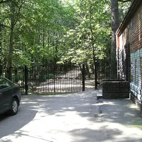

Районы · САО
Куда сходить на севере Москвы
61 место на севере Москвы: 20 компьютерных клубов, 9 развлечений, 8 ресторанов и кафе и 7 мест для прогулки. Например, «Lali», «Петровский путевой дворец» и Посёлок «Сокол». 23 готовых плана начинаются здесь. Больше всего мест у станций «Белорусская», «ЦСКА» и «Беломорская».
- 61 место
- 23 плана
- 20 клубов
Места 40 из 41
Ходынский бул., 4
Ресторан Novikov Group в «Авиапарке» с честной узбекской кухней без восточной показухи.
Подробнее и маршрут: LaliПозвать сюда: Lali
Фото: A.Savin, Free Art License · Wikimedia Commons
Ленинградский просп., 40
Краснокирпичный дворец в псевдоготике у «Динамо»; внутрь — с экскурсией.
Подробнее и маршрут: Петровский путевой дворецПозвать сюда: Петровский путевой дворец
Фото: WM wm WM, CC BY-SA 4.0 · Wikimedia Commons
ул. Сурикова, посёлок «Сокол»
Посёлок художников 1920-х: деревянные дома и тихие улицы прямо у метро.
Подробнее и маршрут: Посёлок «Сокол»Позвать сюда: Посёлок «Сокол»
Фото: A.Savin, CC BY-SA 3.0 · Wikimedia Commons
Ленинградское ш., 51
Отреставрированный вокзал-«корабль» со шпилем и парк на Химкинском водохранилище.
Подробнее и маршрут: Северный речной вокзалПозвать сюда: Северный речной вокзал
Фото: mos.ru, CC BY 4.0 · Wikimedia Commons

Тимирязевская ул.
Лесная опытная дача Тимирязевской академии: вековые деревья и Большой садовый пруд.
Подробнее и маршрут: Тимирязевский паркПозвать сюда: Тимирязевский парк
Фото: Анатолич1, CC0 · Wikimedia Commons
Вятская ул., 41А
15 столов русского бильярда в здании Мельникова, ресторан и VIP-зоны. 12–00.
Подробнее и маршрут: Дом русского бильярда «Москва»Позвать сюда: Дом русского бильярда «Москва»
Фото: Yartsew, CC BY-SA 4.0 · Wikimedia Commons
Тимирязевская ул., 53
Деревянный «викторианский» дом, привезённый из Англии в 1876 году для профессоров академии. Калитка открыта — можно тихо зайти в сад, осенью увитый красным плющом.
Подробнее и маршрут: Домик ВильямсаПозвать сюда: Домик Вильямса
Фото: Kemal KOZBAEV, CC BY-SA 4.0 · Wikimedia Commons
Ленинградский пр., 15, стр. 11
Частный музей в бывшей кондитерской фабрике «Большевик»: Коровин, Серов, Кустодиев и сильные временные выставки.
Подробнее и маршрут: Музей русского импрессионизмаПозвать сюда: Музей русского импрессионизма
Фото: Sergey A. Demidov, CC BY 4.0 · Wikimedia Commons
Флотская ул.
Парк у Речного вокзала с прудами и скульптурами, посвящёнными фестивалю молодёжи 1957 года.
Подробнее и маршрут: Парк «Дружба»Позвать сюда: Парк «Дружба»
Фото: CaneCorso, CC BY-SA 4.0 · Wikimedia Commons
Ходынский бул.
Новый парк на месте старого аэродрома: прогулочные дорожки, площадки и каток зимой.
Подробнее и маршрут: Парк «Ходынское поле»Позвать сюда: Парк «Ходынское поле»
Фото: mos.ru, CC BY 4.0 · Wikimedia Commons
Ленинградский просп., 32/2
Цыганский театр с песнями и танцами, теперь в новом здании на Ленинградском проспекте.
Подробнее и маршрут: Театр «Ромэн»Позвать сюда: Театр «Ромэн»
Фото: A.Savin, Free Art License · Wikimedia Commons
Ленинградский пр., 15, стр. 11
Книжный на третьем этаже Музея импрессионизма с видом на город. Вход по браслету, без билета.
Подробнее и маршрут: Подписные изданияПозвать сюда: Подписные издания
Фото: Sergey A. Demidov, CC BY 4.0 · Wikimedia Commons
Ленинградское ш., 51
Сезонный ресторан у причалов Северного речного вокзала с закатами над водой.
Подробнее и маршрут: MooringПозвать сюда: Mooring
Фото: mos.ru, CC BY 4.0 · Wikimedia Commons
парк «Ходынское поле»
Новое
Четыре приватных банных «кокона» с автопрограммами пара в парке Ходынское поле: от 2 000 ₽ с человека на шестерых, «Пар для пар» на двоих. До часу ночи.
Ходынский бул., 4 (ТЦ «Авиапарк», 4 этаж)
Новое
Круглогодичный каток прямо в «Авиапарке»: массовые катания каждый день, прокат без залога, в пятницу и субботу — до 23:00. Потом можно поужинать в ТЦ.
Подробнее и маршрут: Mega Ice в «Авиапарке»Позвать сюда: Mega Ice в «Авиапарке»
Ленинградское ш., 51, стр. 5
Бистро с домашней пастой и зелёной террасой в парке Северного речного вокзала. 12–22.
Ленинградский просп., 15, стр. 1
Новое
Ресторан в краснокирпичном корпусе бывшей фабрики «Большевик»: в зале Black Loft идут сольники известных комиков и «Большой девчачий стендап». Билеты от 1000 ₽.
Подробнее и маршрут: Большевик ЛофтПозвать сюда: Большевик Лофт
ул. Нижняя Масловка, 15, стр. 3
Новое
4 000 м² бань у Савёловской: аромапарения каждый час, общая спа-зона с хаммамом и баром для пар и тематические номера «СССР», «Азия», «Плёс» до 10 гостей.
Волоколамское ш., 1, стр. 1
Новое
Русская баня только для женщин у «Сокола»: 4 часа с тремя коллективными парениями — 6 490 ₽, своё место в ресторанной зоне и спа-ритуалы. Готовый девичник.
Ленинградский просп., 47, стр. 2
Новое
Караоке у «Аэропорта»: общий зал и три закрытые кабинки на 6, 10 и 15 человек — поёте только своей компанией. Кабинка от 1500 ₽/час, открыто с 17:00 до 6 утра.
ул. Расковой, 20
Винный ресторан с армянской душой у «Динамо».
Ходынский бул., вл. 1 (парк «Ходынское поле»)
Новое
Батутная арена в парке «Ходынское поле», напротив «Авиапарка». Час прыжков — 1 000–1 500 ₽, есть курс «Сальто за 3 занятия», по ночам на выходные — «Ночь батутов» 18+.
Подробнее и маршрут: Just Up! «ЦСКА»Позвать сюда: Just Up! «ЦСКА»
ул. Зорге, 9, корп. 1
Кафе и мастерская современной флористики у Полежаевской.
Солнечногорская ул., 4, стр. 13
Новое
Экшн, хоррор и перформанс сразу: молодой учёный испытал препарат для мозга, и всё пошло не так. Много локаций, актёры пугают всерьёз — берите компанию.
3-я ул. Ямского Поля
Боулинг с бильярдом от команды бара «Ровесник»: демократичные цены и бронирование через бота.
Большая Академическая ул., 13А
Новое
Бани с 1958 года: мужской и женский разряды с отдельными кабинетами, керамическая и «умная» парные, бар и своя пекарня. Именинникам скидка 20%.
Подробнее и маршрут: Коптевские баниПозвать сюда: Коптевские бани
5-й Войковский пр., 2, стр. 2
Современная русская кухня в парке Покровское-Стрешнево. 10–22, чек ~1 600 ₽.
Тимирязевская ул., 19
Новое
Две команды играют в прятки в абсолютной темноте — смешно, азартно и немного жутко. Отличный формат для дня рождения или шумной компании.
Подробнее и маршрут: Прятки в темнотеПозвать сюда: Прятки в темноте
Дмитровское ш., 30, корп. 1
Новое
Хоррор-квест у «Петровско-Разумовской»: внезапные появления актёров и музыка из классических ужастиков. Есть формат на двоих — 6000 ₽.
Подробнее и маршрут: Хостел ИнглвудПозвать сюда: Хостел Инглвуд
ул. Лизы Чайкиной, 5
Новое
Гастропаб между «Соколом» и «Аэропортом», рассчитанный на большие компании: матчи на большом проекторе, музыка негромкая — игру удобно обсуждать. Есть крытая терраса.
Ленинградский пр., 29, корп. 4
Завтраки весь день и выставки молодых художников прямо в зале. Чек ~1 650 ₽.
Подробнее и маршрут: Brunchy BrunchПозвать сюда: Brunchy Brunch
Ленинградский просп., 37/5
Ресторан Глена Баллиса в «Прайм Парке» у ЦСКА: средиземноморская кухня и большой зал.
Ленинградское ш., 57, корп. 2
Ресторан у Северного речного порта с сезонной кухней и дачным настроением.
Бутырская ул., 75
Новое
Бельгийский паб в цоколе бизнес-центра у «Дмитровской»: сотни сортов пива, а ключевые матчи показывают со звуком.
Подробнее и маршрут: Delirium TremensПозвать сюда: Delirium Tremens
Ленинградское ш., 16А, стр. 4
Розовое кафе во флагмане бренда в Метрополисе: десерты в виде банки сгущёнки. 10–23.
Прибрежный пр., Москва
Парк на 23 га на берегу Химкинского водохранилища: пляж, экотропы, смотровые площадки над водой и велодорожка на 2,4 км.
Подробнее и маршрут: Парк «Левобережный»Позвать сюда: Парк «Левобережный»
Ленинградский пр., 17
Бесплатная библиотека редких изданий в интерьерах Бродского, поэтические вечера. Пн–пт 11–19.
Подробнее и маршрут: Des Esseintes LibraryПозвать сюда: Des Esseintes Library
Ленинградский пр., 36, стр. 39
Кофейня у «Динамо»; через дорогу — бистро той же команды в «Царской площади».
1-я ул. Ямского Поля, 1, корп. 1
Брю-бар известных обжарщиков у Белорусской. 7–22.
Подробнее и маршрут: Skuratov CoffeeПозвать сюда: Skuratov Coffee
Вятская ул., 27, стр. 7
Знакомые с детства блюда по-новому у Савёловской.


Готовые планы 18 из 23
- Музей русского импрессионизма · Музей · м. Белорусская
- 1 минута пешкомБольшевик Лофт · Ресторан со стендапом
Коровин, Серов и Кустодиев в Музее русского импрессионизма, а в соседнем краснокирпичном корпусе бывшей фабрики «Большевик» — ужин и стендап в Большевик Лофт.
Открыть план: Импрессионисты и стендап на фабрикеПозвать сюда: Импрессионисты и стендап на фабрике
Фото: Sergey A. Demidov, CC BY 4.0 · Wikimedia Commons
- Mega Ice в «Авиапарке» · Крытый каток · м. ЦСКА
- 1 минута пешкомLali · Узбекский ресторан
Каток на 4-м этаже «Авиапарка» работает круглый год: прокат без залога, в пятницу и субботу — до 23:00. Ужинать — в Lali в том же ТЦ, никуда не выходя на холод.
Открыть план: Крытый каток и ужин в «Авиапарке»Позвать сюда: Крытый каток и ужин в «Авиапарке»
Фото: A.Savin, Free Art License · Wikimedia Commons
- Mega Ice в «Авиапарке» · Крытый каток · м. ЦСКА
- 1 минута пешкомLali · Узбекский ресторан
- 19 минут пешкомТрели · Караоке с кабинками
Покататься на крытом катке «Авиапарка», поужинать в Lali там же, а потом закрыться в своей кабинке караоке «Трели» у «Аэропорта» — поют до 6 утра.
Открыть план: Лёд, плов и своя караоке-кабинкаПозвать сюда: Лёд, плов и своя караоке-кабинка
Фото: A.Savin, Free Art License · Wikimedia Commons
«Пар для пар» в приватном банном коконе Аура Спа посреди парка Ходынское поле, а потом пять минут до Lali в «Авиапарке» — честная узбекская кухня от Novikov Group.
Открыть план: Пар для двоих и узбекский ужинПозвать сюда: Пар для двоих и узбекский ужин
Фото: A.Savin, Free Art License · Wikimedia Commons
- Посёлок «Сокол» · Исторический посёлок · м. Сокол
- 22 минуты пешкомClara · Кофейня
Тихие улицы посёлка «Сокол» с деревянными домами 1920-х, а потом Clara у «Октябрьского Поля»: мест много, раф с лавандой и канеле — можно сидеть и говорить часами.
Открыть план: Посёлок художников и кофеПозвать сюда: Посёлок художников и кофе
Фото: A.Savin, CC BY-SA 3.0 · Wikimedia Commons
- Петровский путевой дворец · Дворец · м. Петровский парк
- 19 минут пешкомBrunchy Brunch · Арт-бистро
Краснокирпичный дворец в псевдоготике у «Динамо» (внутрь только с экскурсией), а потом завтраки весь день и выставки молодых художников в Brunchy, 19 минут пешком.
Открыть план: Готический дворец и бранчПозвать сюда: Готический дворец и бранч
Фото: WM wm WM, CC BY-SA 4.0 · Wikimedia Commons
- Петровский путевой дворец · Дворец · м. Петровский парк
- 12 минут пешкомClaudia · Средиземноморский ресторан
Краснокирпичный дворец с башнями, как из готического романа, а потом средиземноморский ужин у ЦСКА. Внутрь дворца — только с экскурсией по записи.
Открыть план: Готический дворец и ужинПозвать сюда: Готический дворец и ужин
Фото: WM wm WM, CC BY-SA 4.0 · Wikimedia Commons
- Домик Вильямса · Деревянный дом в саду · м. Петровско-Разумовская
- 25 минут пешкомТимирязевский парк · Лесопарк
Сначала «викторианский» деревянный дом, привезённый из Англии в 1876 году, и сад, осенью увитый красным плющом, а потом минут 25 пешком до вековых деревьев и Большого садового пруда Тимирязевского парка — дорога тоже часть прогулки.
Открыть план: Домик в плюще и лес ТимирязевкиПозвать сюда: Домик в плюще и лес Тимирязевки
Фото: Kemal KOZBAEV, CC BY-SA 4.0 · Wikimedia Commons
- Парк «Дружба» · Парк · м. Речной вокзал
- 11 минут пешкомКлуб «Объект 35» · Компьютерный клуб
Сначала круг по парку «Дружба» мимо прудов и скульптур фестиваля молодёжи 1957 года, а потом в «Объект 35», где час в общем зале стоит дешевле шавермы.
Открыть план: Парк «Дружба» и самый дешёвый компПозвать сюда: Парк «Дружба» и самый дешёвый комп
Фото: CaneCorso, CC BY-SA 4.0 · Wikimedia Commons
- Посёлок «Сокол» · Исторический посёлок · м. Сокол
- 12 минут пешкомF5 Сокол · Компьютерный клуб
Деревянные дачи 1920-х посреди города, а потом сертифицированные NVIDIA компы F5 у самого метро.
Открыть план: Посёлок Сокол и F5Позвать сюда: Посёлок Сокол и F5
Фото: A.Savin, CC BY-SA 3.0 · Wikimedia Commons
- Северный речной вокзал · Парк и вокзал · м. Речной вокзал
- 8 минут пешкомDachniki · Ресторан
Гуляете на закате вокруг вокзала-«корабля» со шпилем и по парку у Химкинского водохранилища, а потом ужинаете в Dachniki: сезонная кухня и дачное настроение.
Открыть план: Речной вокзал на закатеПозвать сюда: Речной вокзал на закате
Фото: mos.ru, CC BY 4.0 · Wikimedia Commons
- Северный речной вокзал · Парк и вокзал · м. Речной вокзал
- 14 минут пешкомSignora · Итальянское бистро
- 20 минут пешкомКлуб «Объект 35» · Компьютерный клуб
Вокзал-корабль со шпилем на Химкинском водохранилище, обед домашней пастой в Signora прямо в парке вокзала, а оттуда двадцать минут до одного из самых дешёвых клубов города.
Открыть план: Речной вокзал, паста и каткаПозвать сюда: Речной вокзал, паста и катка
Фото: mos.ru, CC BY 4.0 · Wikimedia Commons
- Дом русского бильярда «Москва» · Бильярд и ресторан · м. Дмитровская
- 16 минут пешкомOgorod · Ресторан
Пятнадцать столов русского бильярда в здании Мельникова, а потом ужин с коктейлями в Ogorod рядом с Хлебозаводом.
Открыть план: Русский бильярд в здании МельниковаПозвать сюда: Русский бильярд в здании Мельникова
Фото: Yartsew, CC BY-SA 4.0 · Wikimedia Commons
- Парк «Ходынское поле» · Парк · м. ЦСКА
- 6 минут пешкомLali · Узбекский ресторан
Прогулка по Ходынскому полю и узбекская кухня в Lali.
Открыть план: Ходынка и пловПозвать сюда: Ходынка и плов
Фото: mos.ru, CC BY 4.0 · Wikimedia Commons
- Театр «Ромэн» · Театр · м. Динамо
- 8 минут пешкомBravis · Винный ресторан
Песни и танцы в «Ромэне», а после спектакля ужин в винном ресторане с армянской душой, всего восемь минут пешком.
Открыть план: Цыганский театр и виноПозвать сюда: Цыганский театр и вино
Фото: A.Savin, Free Art License · Wikimedia Commons
- Тимирязевский парк · Лесопарк · м. Тимирязевская
Вековые деревья лесной опытной дачи Тимирязевской академии и Большой садовый пруд: длинная прогулка с собакой и разговор без машин вокруг.
Открыть план: Тимирязевский лес с собакойПозвать сюда: Тимирязевский лес с собакой
Фото: Анатолич1, CC0 · Wikimedia Commons
- Just Up! «ЦСКА» · Батутная арена · м. ЦСКА
- 4 минуты пешкомАура Спа · Банный спа-комплекс
Час прыжков на батутной арене в парке «Ходынское поле», а в двух шагах — приватный банный «кокон» Аура Спа с автопрограммами пара на всю компанию.
Открыть план: Батуты и банный коконПозвать сюда: Батуты и банный кокон
Русская баня только для женщин у «Сокола» — четыре часа и три коллективных парения, а потом салаты и коктейли в цветочном кафе «Лилианс» у «Октябрьского Поля».
Открыть план: Женская баня и цветочное кафеПозвать сюда: Женская баня и цветочное кафе
Компьютерные клубы 10 из 20
Смольная ул., 35, стр. 1
Один из самых дешёвых клубов города — часы в общем зале от нескольких десятков рублей.
Подробнее и маршрут: Клуб «Объект 35»Позвать сюда: Клуб «Объект 35»
Дмитровское ш., 107А, корп. 3 (ЖК «Город»)
Круглосуточно
Компьютерный клуб и антикафе в ЖК «Город». Работает круглосуточно.
Подробнее и маршрут: Киберклуб «Портал» ЯхромскаяПозвать сюда: Киберклуб «Портал» Яхромская
ул. Черняховского, 3
Круглосуточно
Клуб сети Colizeum в 250 метрах от «Аэропорта». Работает круглосуточно.
Подробнее и маршрут: Colizeum АэропортПозвать сюда: Colizeum Аэропорт
Новопетровская ул., 6 (3 этаж)
Клуб сети Colizeum на третьем этаже на Новопетровской улице: пара минут пешком от «Войковской», чуть дальше — МЦК «Балтийская».
Подробнее и маршрут: Colizeum БалтийскаяПозвать сюда: Colizeum Балтийская
Ленинградское ш., 13, корп. 1 (цокольный этаж)
Круглосуточно
26 ПК, три буткемпа, VIP-зал и две приставки. Работает круглосуточно.
Подробнее и маршрут: Colizeum ВойковскаяПозвать сюда: Colizeum Войковская
ул. Гризодубовой, 2 (2 этаж)
Круглосуточно
Общий зал на 12 ПК, VIP на 14 и VIP PRO на 4 места, видеокарты от RTX 4060 и три PS5. Работает круглосуточно.
Подробнее и маршрут: Colizeum ЦСКА (Ходынка)Позвать сюда: Colizeum ЦСКА (Ходынка)
Дмитровское ш., 107А, корп. 2
Круглосуточно
Зоны Standard, Bootcamp и VIP в пяти минутах от «Яхромской». Работает круглосуточно.
Подробнее и маршрут: Colizeum ЯхромскаяПозвать сюда: Colizeum Яхромская
проезд Аэропорта, 8, стр. 4 (ЖК «Studio 8»)
Круглосуточно
Компактный клуб у «Аэропорта» с VIP-местами, удобен для долгих сессий. Работает круглосуточно.
Подробнее и маршрут: Cyber Game ArenaПозвать сюда: Cyber Game Arena
Дмитровское ш., 70
Круглосуточно
15 ПК на RTX 5060 с мониторами 165 Гц, две VIP-комнаты на RTX 5070 Ti, два буткемпа и PS5. Работает круглосуточно.
Подробнее и маршрут: CyberSpot ДмитровкаПозвать сюда: CyberSpot Дмитровка
Беломорская ул., 9
Круглосуточно
Мониторы 240 Гц, мыши Logitech G403 и гарнитуры G432. Работает круглосуточно.
Подробнее и маршрут: CyberX БеломорскаяПозвать сюда: CyberX Беломорская
Как позвать
- Выбери план, место или событие — в карточке адрес, цены и маршрут в Яндекс Картах.
- Нажми «Позвать сюда» — соберётся приглашение-игра для свидания или голосование для компании.
- Отправь ссылку в любой мессенджер: тебе ответят, а компания отметит, куда и когда может. Бесплатно и без регистрации.